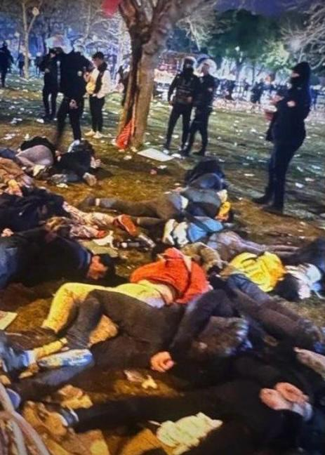
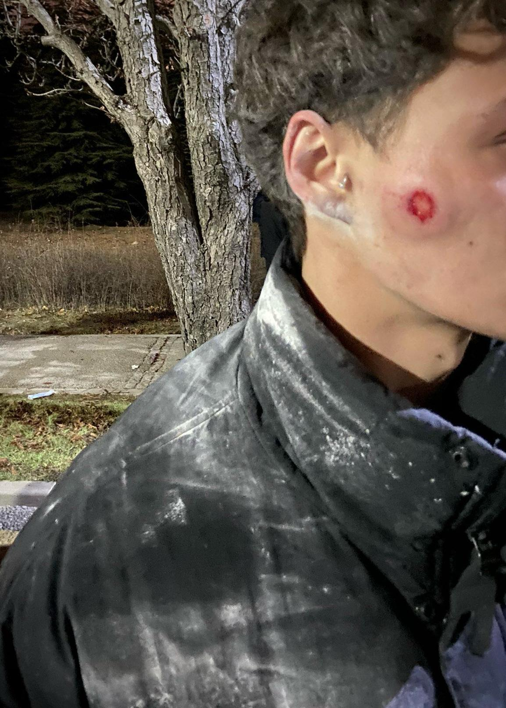
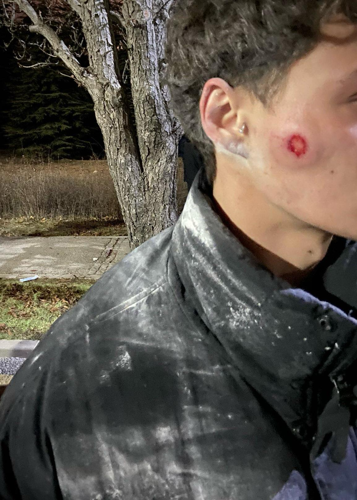
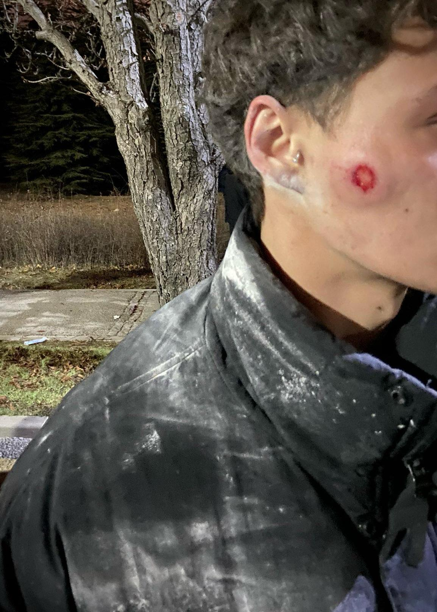

Zulme Tanık Ol!
19 Mart direnişi, Ekrem İmamoğlu'nun hukuksuzca tutuklanmasının ardından başladı. Polis günlerdir, suçu sadece haklarımızı savunmak olan gençlere acımasızca müdahale ediyor. Plastik mermilerle, coplarla, tomalarla ve biber gazıyla Türk bayraklı evlatlarımıza, orantısız güç uyguluyor.
Türkiye Cumhuriyeti Anayasası Madde 34 - Herkes, önceden izin almadan, silahsız ve saldırısız toplantı ve gösteri yürüyüşü düzenleme hakkına sahiptir.

 



Daha fazla video yükleniyor...